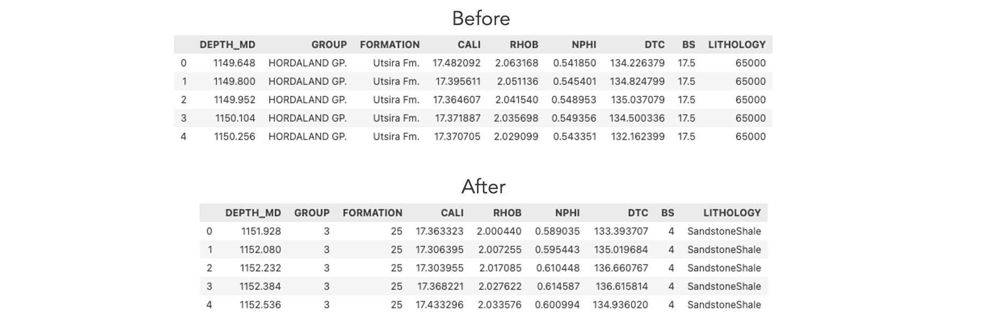
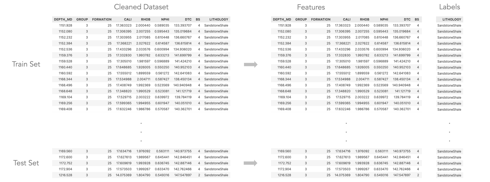
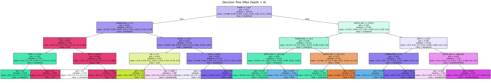
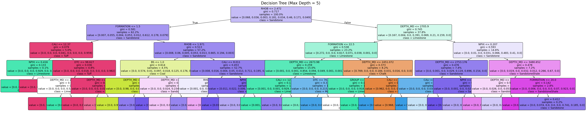

Decision Tree
Overview
Decision Trees are machine learning models used for classification and regression tasks. They recursively split data into subsets based on feature values to create a tree-like structure. The goal is to maximize homogeneity within each subset, making predictions at leaf nodes based on the most frequent class or value. The splits are determined using criteria like Gini impurity, entropy, and information gain, which help to choose the best features for each decision point.

Example of Decision Tree classifier. (Source)
How does Decision Tree work?To train a Decision Tree, the algorithm begins by selecting the feature that best splits the data based on a criterion like Gini impurity or entropy. This process is repeated recursively, dividing the data into subsets until stopping criteria (e.g., tree depth or minimum samples per leaf) are met. Once trained, predictions are made by following the path from the root to a leaf node, where the final prediction is determined.
Example of Decision Tree classifier.
(Source)
The usage of the Entropy and Information Gain Gini impurity, entropy, and information gain are used to evaluate potential splits in a decision tree. Gini impurity focuses on minimizing the probability of incorrect classifications, while entropy measures disorder or uncertainty in the data. Information gain quantifies how much uncertainty is reduced after a split. The goal is to choose the split that results in the purest subsets, improving model accuracy.

Example of Decision Tree classifier.
(Source)
GINI Impurity's Example: Consider a dataset with 100 samples, where 70 are class A and 30 are class B. The Gini impurity is calculated as:
\( Gini = 1 - (p_A^2 + p_B^2) = 1 - ((0.7)^2 + (0.3)^2) = 1 - (0.49 + 0.09) = 0.42 \)
Information Gain's Example: For a dataset split by a feature, calculate the entropy before and after the split. For a split where one subset has 60% class A and 40% class B, and the other has 20% class A and 80% class B, information gain is as the below equation. The result reflects how much the split reduces uncertainty.
\( IG = Entropy_{\text{(before)}} - \left( \frac{|subset_1|}{|total|} \cdot Entropy_{(\text{subset}_1)} + \frac{|subset_2|}{|total|} \cdot Entropy_{(\text{subset}_2)} \right) \)
Why it is generally possible to create an infinite number of trees?
Decision Trees can have an infinite number of possible structures due to the flexibility in choosing splitting features,
thresholds, and stopping criteria. Small changes in the data, tree depth, or splitting criteria can result in a completely
different tree. Moreover, overfitting can lead to highly complex trees, further increasing the number of potential tree configurations.
For example, if a dataset has many features, each feature can be split at various thresholds, leading to numerous combinations
of splits and branches, resulting in an exponential growth of possible tree structures.
Data Preparation
-
Image of before & after cleaning data.

Data before vs after cleaning and processing.
-
Image of the sample train and test data.

Cleaned dataset and Train-Test splitting for Decision Tree classifier.
-
How the test train split was created?
Train-test splitting is a fundamental step to evaluate a model's performance. The dataset is divided into a Training Set, which is seen data that provided for model training, and a Testing Set, which acts as unseen data and uses to assess its accuracy.

Train test split procedure. (Source)
A common split ratio is 80% for training and 20% for testing, though this can vary depending on the dataset size and problem complexity. -
Why it is important to create a disjoint split?
These sets must be disjoint, meaning they should not share any data points, to ensure a fair evaluation. The purpose is evaluate the model's generalization ability, which is need to predict real-world data. On the other hand, if the model were tested on data it had already seen, it would give an overly optimistic accuracy, failing to reflect the generalization ability.
Results
Discuss, illustrate, describe, and visualize the results. Include the confusion matrix and the accuracy. Create and include at least three different trees with difference root nodes (you think about how to do this) and other difference (up to you).
Testing accuracies of models with different max_depth (3, 4, 5)
Confusion matrix of Decision Tree models with different max_depth (3, 4, 5).
Decision Tree with max_depth = 3.
Decision Tree with max_depth = 4.
Decision Tree with max_depth = 5.
Hypertuning of max_depth shows convergence at max_depth=14 and testing accuracy reach 92%.
Conclusions
What did you learn (and/or what can you predict here) that pertains to your topic?
Code & Deliverables
For your reference, all external links are provided below: